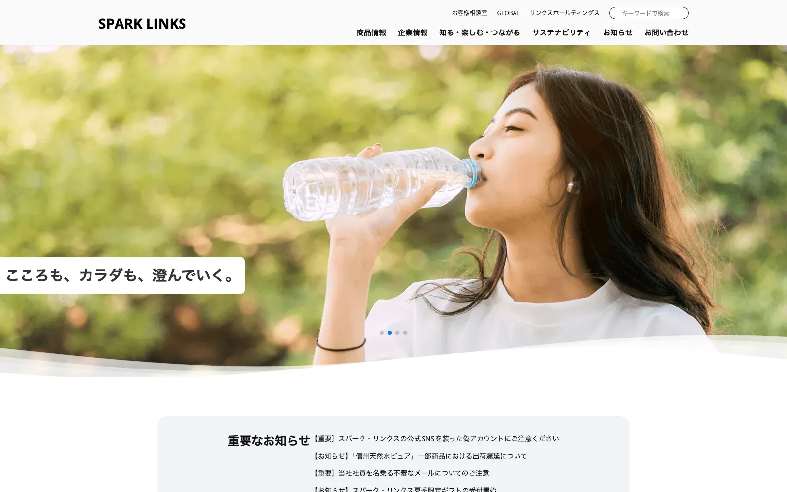

Works — Corporate Site
Spark Links架空の飲料メーカーサイト
架空の飲料メーカー「Spark Links」のブランドサイト。ペルソナ設計からデザイン・実装まで一貫して担当しました。

Purpose制作の目的
ブランディングとユーザーへの情報提供を両立することを目的に制作しました。「日常に、ひらめきと繋がりを」という企業理念のもと、製品紹介を軸に、企業理念・キャンペーン・飲み方提案・CSR活動など多様なコンテンツを整理し、信頼感と親しみやすさのある企業像を伝える設計としています。
「製品を知り、楽しみ、つながる」体験導線を重視し、ECやSNSへ自然に誘導できる構成に。清涼飲料に関心のある10〜50代の男女を主なターゲットに、初めて訪れるユーザーから継続的なファン層まで幅広く対応できる構成を意識しました。
Business事業概要（架空設定）
サイトの説得力を高めるため、企業設定そのものから作り込みました。「日常に、ひらめきと繋がりを」という企業理念のもと、炭酸飲料をコア事業に、サステナビリティを重視した持続可能な社会づくりに取り組む——という世界観を前提に情報を設計しています。
- 社名
- スパーク・リンクス株式会社（Spark Links Inc.）
- 設立
- 2005年4月
- 資本金
- 20億円
- 従業員数
- 720名（2025年3月時点／研究・製造部門含む）
- 所在地
- 東京都渋谷区渋谷1-1-1 スパークリンクスタワー
- 事業領域
- 炭酸飲料を軸とした飲料の製造・販売、サステナビリティ事業
Personaターゲット・ペルソナ設計
「収益性・拡散性の高い理想型ペルソナ」と「既存顧客に多い現実型ペルソナ」をそれぞれ5名ずつ、計10名設計。訴求内容とコンテンツの優先順位を決める土台にしました。ここでは代表的な各3名を紹介します。
理想型ペルソナ（収益性・拡散性の高い層）
田中 美咲 / 28歳・IT企業マーケター
健康志向でSNS発信力が高く、トレンドに敏感。オーガニック・低糖質を求め、映えるパッケージデザインを重視。
鈴木 大輔 / 35歳・営業職
子育て中で家族の健康を重視する無添加志向。子どもも安心して飲める商品を、EC・定期購入で求める。
山本 明子 / 42歳・管理栄養士
栄養知識が深く信頼性を重視。科学的根拠のある健康成分や、専門家による解説コンテンツを求める。
現実型ペルソナ（既存顧客に多い層）
田村 真由 / 40歳・事務職
健康志向だがこだわりは強くなく、コンビニ利用が多め。甘さ控えめ・低カロリーで、見慣れたブランドの安心感を求める。
佐々木 洋介 / 50歳・公務員
価格重視で毎日炭酸水を飲む習慣。手頃で続けやすく、スーパーやドラッグストアで買えることを重視。
伊藤 沙織 / 32歳・派遣社員
仕事中や休憩にリフレッシュ目的で微炭酸を飲む。爽快感はあるが強すぎない味を、コンビニ・自販機で手軽に。
Strategyサイト設計・CV設計
サイトの役割を「ブランド価値・企業理念・環境への取り組みを、ユーザー・投資家・パートナー企業へ分かりやすく伝えること」と定義。サイトコンセプトとして、次の4点を軸に情報を設計しました。
- ブランド価値・企業理念・環境への取り組みを、ユーザー／投資家／パートナー企業へ分かりやすく伝える
- 商品や技術開発の情報を信頼感あるビジュアルで紹介し、専門性・革新性をアピールする
- ESG・SDGs対応を軸にサステナビリティ情報や社会貢献を発信し、共感を醸成する
- 採用・IRなど企業活動の多面的な情報を整理し、適切な相手へ届ける
コンバージョン（サイトの最終目的）は、段階的に5つ設計しています。
- 商品購入・EC誘導：公式オンラインショップでの購入、新商品・限定品の購入促進キャンペーン
- ファンの獲得・リテンション：メルマガ登録、SNSフォロー・シェア促進、無料サンプル請求
- 法人からの問い合わせ獲得：取引・販売代理店・OEM・コラボレーションの問い合わせ
- 採用応募の促進：採用情報ページからのエントリー・問い合わせ
- 社会的価値への参加：環境保護や地域貢献活動への参加申込み
全体構成は「お知らせ → 商品紹介 → キャンペーン → コラム → レシピ → 企業情報 → フッター」と整理し、視線の流れに沿って各CVへ誘導しています。
Designデザインについて
ファーストビューは「自然のチカラで、気持ちにひと息。」をはじめとする4つのキャッチコピーを縦に連ね、静かで心地よいリズムと清涼感を演出。ホワイトと淡いミントブルーを基調に、アクセントとしてビタミンカラーを使用し、余白を意識的に取り入れてやさしさと信頼感のあるトーンに仕上げました。
PC・SPそれぞれのワイヤーフレームをFigmaで作成し、情報の優先順位と視線の流れを整理。SP表示ではタップ操作性や情報の優先順位を見直し、快適なレスポンシブ設計としています。
Codingコーディングについて
HTML/CSSをベースに、レスポンシブ対応とユーザビリティを重視して実装。グリッドレイアウトやカードUI、ボタンサイズ、テキストの可読性を細かく調整し、モバイルファーストを意識した構成としています。CSS設計にはBEMをベースに命名規則を統一して保守性と拡張性を確保し、初期化には日本語環境に最適化された「kiso.css」を採用しました。
ドロワーメニュー・スムーススクロール・タブ切り替えなどの基本機能は自作し、製品スライダーやキャンペーンバナーなどの動的要素はSwiperで実装。セマンティックなマークアップとアクセシビリティへの配慮により、SEOの基本にも準拠した構築を意識しました。
この作品の制作意図や工夫について、詳しくお話しできます。お気軽にご連絡ください。
お問い合わせ